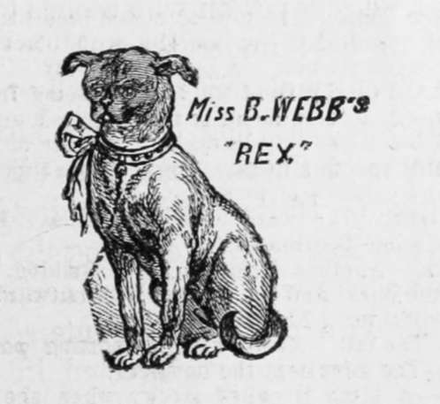
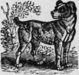
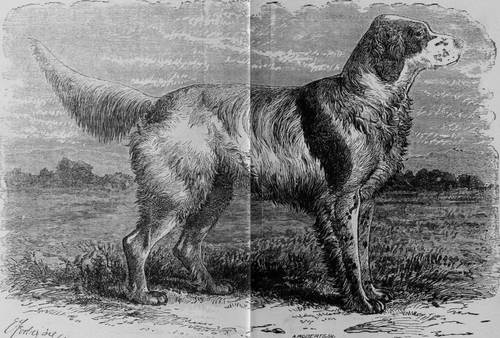
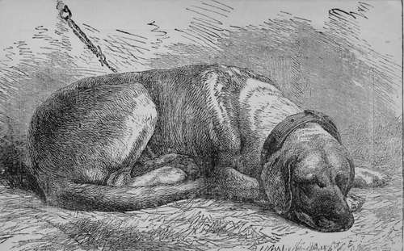
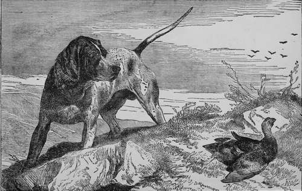
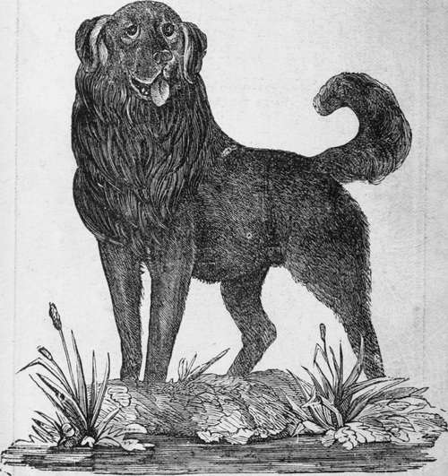
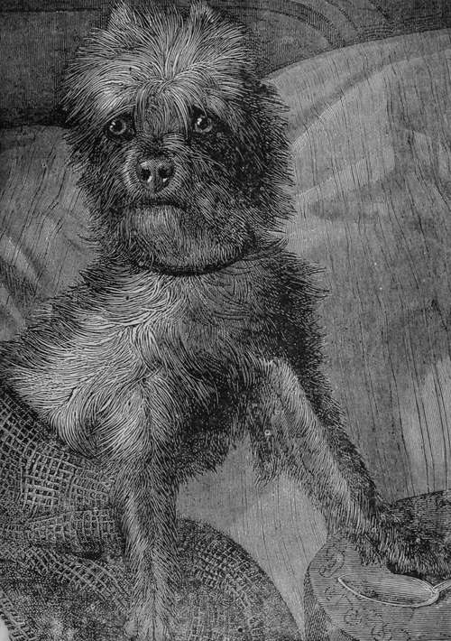

Glossary Of Words Used By The Fancy. Continued
Description
This section is from the book "Breeding, Training, Management, Diseases Of Dogs", by Francis Butler. Also available from Amazon: Breeding, training, management, diseases.
Glossary Of Words Used By The Fancy. Continued
Rose-Ear
Another form of ear of Balldog. Tins ear "folds at the back, and the tip laps over outwards, showing part of the inside," (Idstone).
Stern
The tail. Mostly used in sporting parlance..
Stifle
The joint next, the buttock.
Stocky
A bitch is called stocky when she looks as if she could throw good pops and be a good mother.
Stop
The hollow or indentation between the eyes of some breeds, as the Bulldog, the King Charles, Ac.
Sting
A dog's tail is stiug-like when it is broad ;;t the base and tapers to a fine point, as in the well-bred Pointer. Slut.—liitcn, or lady-dog. Not often used.
Snipe*
A dog's muzzle, when long, narrow, and peaked, is so designated
Snapdog, Or Whippet
A kind of small Greyhound, used in some countries for rabbit-coursing.
Scraitab, Or Sabre Curve
Words used to define the correct carriage in the tail of the Setter.
Throatiness
Looseness of the skin of the throat, or dewlap. Quite correct in the Bulldog and Dachshund, for example, but intolerable in the Pointer.
Tongue
Equivalent to voice.
Tulip-Ear
Partly pricked, and drooping at the tip.
Thumb-Mark
An obliquely-shaped black mark crossing the foot of a well-bred Black-and-tan above the toes.
Tight-Lipped
Having no flew; as in the lighting Bulb-and-terrier Dog.
Weedy
A very expressive word, as applied to a dog who looks leggy, thin, badly bred, aud apparently going to seed
Rules And Regulations Of The Westminster Kennel Club
No dog belonging to the Westminster Kennel Club, or to any member thereof, will be entered for premium, although all will be on exhibition.
This Bench Show will be held under the rules adopted by the National American Kennel Club, as
Rule 1
Every person who wishes to exhibit at any show held under these Rules, must at the time of entry clearly identify by name and age (if known ) the dog he intends to exhibit, and the name of the sire and dam (if known) must be given. If the name of a dog has been changed it is necessary in entering the said dog to give his old as well as his new name.
Rule 2
If a dog shall be entered without i being clearly identified as directed in Rule 1, he shall forfeit any prize that may have been awarded him, and if the omission be detected in time he shall not be allowed to compete, and shall forfeit all entrance fees and subscriptions.
Rule 3
The committee or authorities of any show held under the Kennel Club Rules, may reserve to themselves the right to exclude any dog or dogs belonging to any person who has been proved, to the satisfaction of the committee of the Club, to have misconducted himself, in any way, in connection with dogs, dog-shows or dog-trials.
Rule 4
No dog shall be qualified to compete, or entitled to receive a prize, if awarded, who is suffering from mange, or any other form of contagious disease.
Rule 5
A person, duly qualified, appointed by the committee, shall decide whether a dog is, or is not, suffering from mange or any other contagious disease, and shall give his opinion immediately to the secretary, or committee of the show, in writing, and if found to be afflicted with any such disease, the dog shall be at once removed.
Rule 6
A dog that has been exhibited or has won a prize in a class exclusively for puppies under twelve months old, is not thereby excluded from being exhibited in a class where previous prize winners are not allowed to compete.
Rule 7
All imported clogs and their progeny on both sides ( but not the progeny of the latter) shall be entered in the imported class, and be debarred from entering in the native class; but no native dog shall be debarred from entering in the imported class.
Rule 8
Dogs are to be judged by the scale of points used at recent bench shows and copied from the Fanciers Gazette.
In addition to the above, the following Rules and Regulations will be strictly enforced:
1.—All judging will be done in public on a raised stand prepared for the purpose, and collars bearing owners' names will be removed or covered before the dogs are brought before*the judges.
2.—An entry fee of $2 will be charged for each animal entered. The entry fee must in ail eases accompany the entry. Entries will be received until noon on April 25 th, except in case of foreign exhibitors, who will be allowed until May 1st Dogs must be at the Madison Avenue entrance of the Garden by 8 o'clock on the morning of Tuesday, May 8th, but it is earnestly requested that when possible all dogs will be on hand on Monday, the 7th. The entrance fee will include care and feed of dogs.
3.—It is required that a price be named for each dog at the time of making the entry to be printed in the catalogue, at which price the dog may be claimed ; the exhibitor, of course, having the option of naming a prohibitory price. A commission of 10 per cent, will be charged on all sales, and th3 sain.3 must be effected through the Secretory or Superintendent.
4.—All entries must be made on blanks furnished by the Club, which can be had from the Superintendent by addressing him at his office, No. 17 Chatham Street, (P. O. Box 2832.)
5.—The authorities will use due diligence for the care and safety of all dogs exhibited (watchmen being on duty both night and day,) buj it must be distinctly understood that they will not be responsible for loss of or damage to any dog exhibited, whether the result of accident or any other cause.
6.—The pedigree of all dogs entered is desired, although not actually required, except in case two dogs in same class should be so nearly equal that judges cannot agree which is the best. In such case if one has an authenticated pedigree and the other has not, the premium will be given to the dog with the pedigree.
7.—The decision of judges will be final in all cases, unless misrepresentation or collusion can be shown—should this occur the Executive Committee will use their discretion in the matter. Allowance will be made for dogs that have been worked this season, and no deduction will be made for docked tails or ears.
8.—Judges will be instructed to withhold the prizes offered in any class where there is no competition, unless the animal exhibited possesses suitable merit, in which case their discretion shall govern the prize to be awarded, either first or second, and they will then be instructed to withhold prizes where the dogs do not come up to the proper standard of merit.
9.—Exhibitors will be permitted to take home their dogs every evening after the show is closed upon leaving a deposit of Five Dollars with the check clerk and surrendering their entry tickets, both of which will be returned on the re-producing of the dog in the morning before 10 o'clock. If prize winners should be taken out and not returned the prizes will be forfeited.
10.—Exhibitors need not accompany their dogs. They can be sent direct to the exhibition hall, and direction cards, printed for this purpose, will be furnished by the secretary. All dogs will be promptly returned to their owners at the close of the exhibition, or otherwise disposed of as they may direct.
11.—The show will be open from 10 A. M. to 10 P. M. The judging will be done on the first day, and the ribbons will be attached to the stalls of the winners immediately thereafter.
12.—The prizes, which will be in gold coin for the several classes except Champions, will be presented in public on the evening of May 10th, at 9 P. M
13.—The term dog or bitch implies that the animal is over one year old. The age of it must be computed from, the date of birth up to the 8th of May.
14.-Railway Arrangements.—Arrangements for the free transportation of dogs tire in course of completion with all Railway Companies centering in New York, and will be duly announced.
15.—The members of the Committee will be in constant attention, and especial attention will be given to the care of pet dogs.
16.—Judges will be instructed to give the awards of Highly commended and Commended where in their option it is warranted.
17.—No dog will be received unless supplied with suitable chain and collar. Bitches with pup and small pups weaned, will have suitable pens provided. Toy clogs will be furnished with suitable cages.
18.—Exhibitors residing abroad may ship their dogs to the care of the Westminster Kennel Club. If for sale, certificate from the American Consul at the port of shipment that they are exported for breeding purposes must accompany them. If to be returned, the Club will give a bond to the Custom House authorities.
Pride Of Border
Pedigree of the pure Laverock setter dog, "Pride of the,Border," as carefully selected by Mr. Laverack, Broughal: Cottage, Whitchurch. Shropshire. England. Imported in 1874, by his present under date of March 31st, 1875. Bred in 1869 by Laverack ner Mr Charles H Raymond. Pride of the Border is a white dog, with liver mark tags, and is sire of Mr. Laverack's celebrated Stock and Field Dos. Blue Prince; Mr. Dary Hollin Silk Toryy; Langsion's Blue Peter, prize winners at Birmingham andManchester; Mr. Pickets Blue Dash, and of many other highly valued Setters.
Fox Farm. Moris Plains, N. J.
LE 2D............I ck, white & tan.)
( Dash 2d (blue mottled.))
Nero, The Largest Dog In Europe
Hero, the subject of the foregoing engraving, was first exhibited at the Crystal Palace Dog Show in 1871, in the open or keepers' class, and was there, without a moment's hesitation, awarded the first prize. lie was then about seven years old, and remarkable for his symmetrical proportions, beautiful brown color, and enormous size ; of the latter some idea may be formed by stating that at that time he weighed nearly 165 pounds. It is extremely difficult to assign a distinctive name to this breed. Some incline to the belief that it is analogous to the southern hound; by some it is styled Welsh mastiff, and by others a cross with (with what not stated) the English bloodhound. The question of any suspicion of bloodhound is met by the dissimilarity of the ears which in the bloodhound are long, fine, and pendulous; whereas in this dog they are short and a little coarse, and, when excited, are slightly "pricked ;"' and whereas the bloodhound, as well as the mastiff, is well known to be averse to water, this breed would almost live in it. It is not improbable that it is a descendant of the hounds used in the chase centuries since, when wolves were common in England, the keenness of their scent being very fine.
The dog is the property of Mr. Howel W. Williams, of Swansea, Wales.
Bruno
Nunquam Dormio.

Continue to: